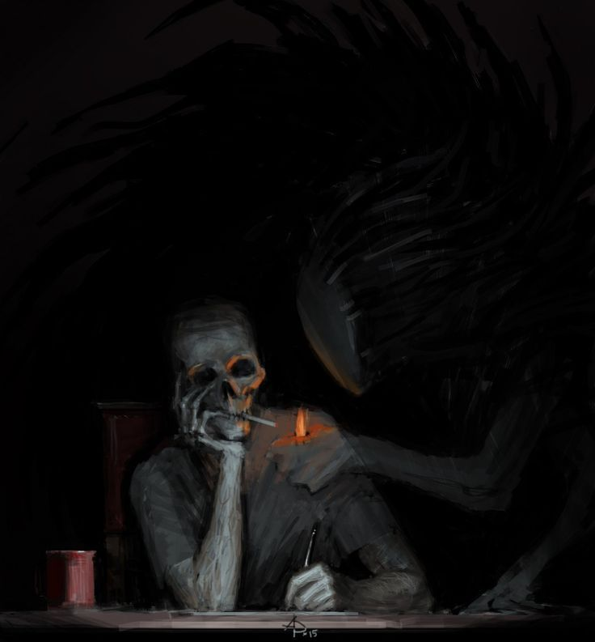
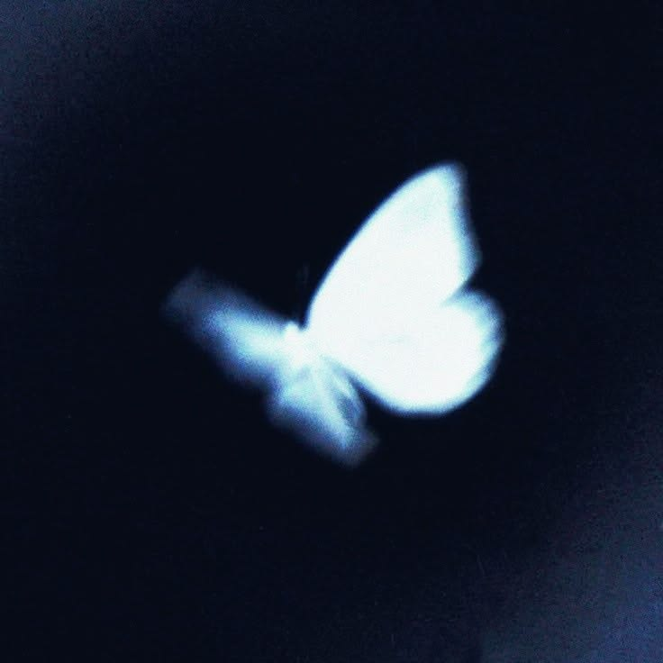
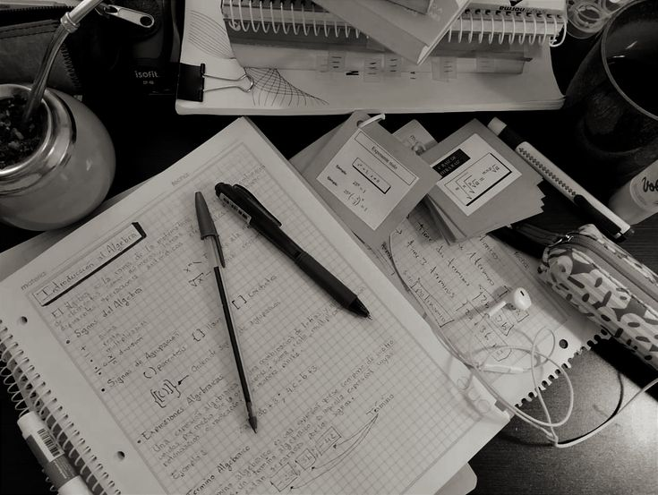

Una oportunidad más para empezar de nuevo, con tratamiento médico, terapia y un equipo que entiende que cada historia es distinta.
Entender el riesgo es el primer paso para pedir ayuda a tiempo.

El consumo prolongado de sustancias estimulantes afecta la salud en general y órganos vitales, que pueden desencadenar enfermedades crónicas e irreversibles.
Las adicciones pueden afectar igualmente ala salud mental de las personas,desencadenando depresion,ansiedad, y hasta aislamiento,afectando tambien a los que lo rodean
Las rupturas emocionales pueden proyectarse en la vida de la persona, conllevando a la perdida de amistades, abandono o incluso pocas oportunidades laborales.
Explora cada parte de nuestro proceso: quiénes somos, los programas disponibles, cómo empezar y cómo contactarnos.

Conoce nuestra historia, instalaciones y equipo.
Ver más
Tratamientos adaptados a cada etapa del proceso.
Ver másCuatro pasos claros, del primer contacto al ingreso.
Ver másEscríbenos o llama. Todo lo que compartas es confidencial.
Ver más"CAERAS Y LLEGARAS ALO MAS PROFUNDO,NO OBSTANTE EL RESURGIR SERA MONUMENTAL,NO ES COMO EMPIEZA,ES COMO TERMINA."